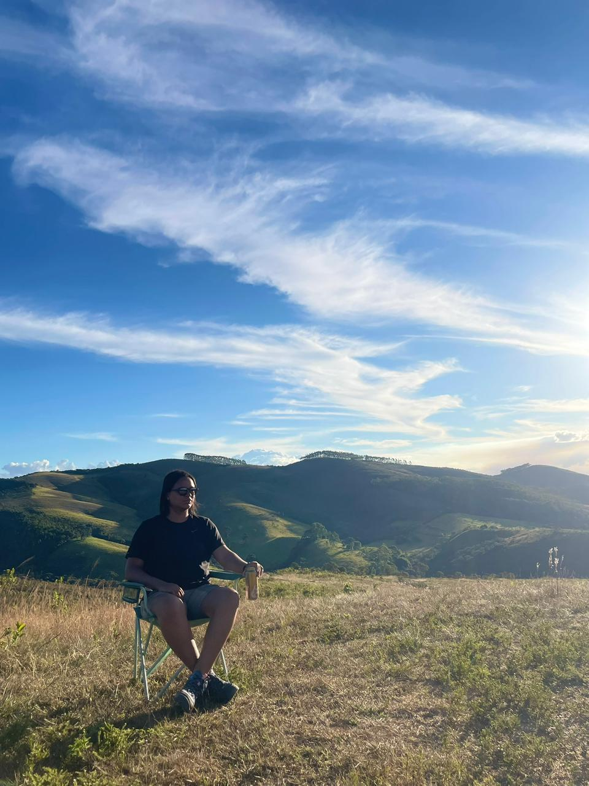

Desde pirralha, eu ficava vendo o meu tio mexendo em uma tela preta e não entendia muito bem o que era. Cresci, deixei de lado e aos poucos foi voltando a curiosidade sobre a "tela preta.
Do ano passado (2025) pra cá, aos poucos fui me informando sobre o assunto e pegando gosto novamente. Até que pesquisei e encontrei esse curso de Front End no Senai.
Aos poucos a sopa de letrinhas, vai tomando forma e ganhando jeito dentro. Uma satisfação, muito boa!